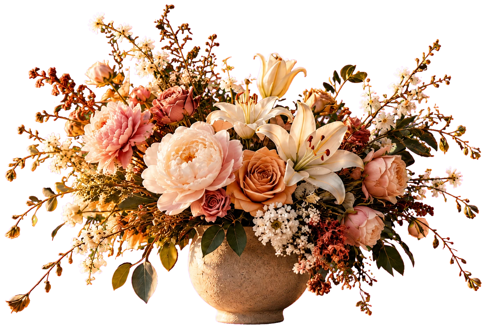
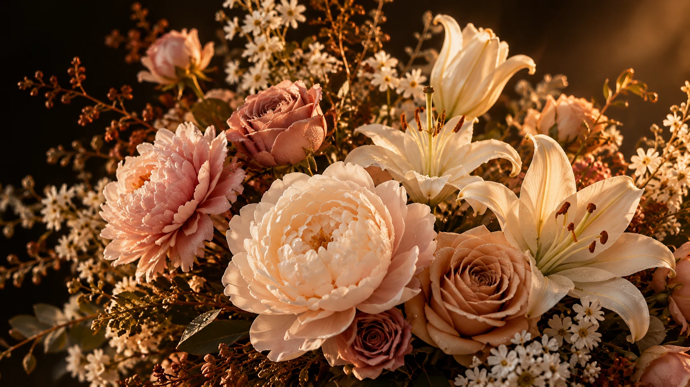
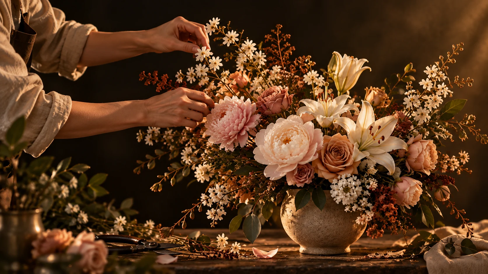

O despertar
Uma flor de cada vez, o instante ganha vida.
FLORES PARA UM AMANHÃ MAIS BONITO
Buquês criados com intenção para os momentos que importam. Da beleza de todos os dias às celebrações inesquecíveis.

Uma flor de cada vez, o instante ganha vida.
Pétalas se abrem sob a luz quente da tarde.
Beleza que permanece depois do momento.

VELORA · ESTUDO BOTÂNICOA ARTE DE FLORESCER
Rosas, peônias e folhagens selecionadas compõem arranjos feitos à mão, com atenção à forma, às cores e aos pequenos detalhes.
NOSSA COLEÇÃO
Explore a composição por diferentes perspectivas: o volume das flores, o desenho das pétalas e a delicadeza dos acabamentos.
O equilíbrio entre flores, formas e folhagens.
Volume e profundidade em cada perspectiva.
Texturas e nuances que tornam cada flor única.
POR TRÁS DE CADA ARRANJO
Da escolha das flores ao último acabamento, cada composição é preparada com atenção ao que torna um arranjo especial.
Selecionamos flores e folhagens considerando frescor, cores e formas.
Distribuímos cada elemento para criar equilíbrio, movimento e profundidade.
Ajustamos os detalhes e preparamos o arranjo para sua apresentação.

FLORES PARA MOMENTOS ESPECIAIS
Conte-nos a ocasião e suas preferências. Vamos conversar sobre um arranjo pensado para esse momento.
Contato por WhatsApp ainda não configurado.